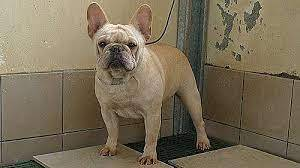

圖片 |
標題 |
說明 |
|---|---|---|
威爾斯柯基犬 |
威爾斯柯基犬平均肩高大約25至30公分、重約15公斤，原本培養來放牧牛羊， 低矮的身材讓他們免於被牛隻踢到。柯基犬是主動的犬隻並且相當的聰明， 是絕佳的夥伴動物，並且在牧羊競賽跟犬隻敏捷競賽中是出色的參賽者。 |
|
硬毛臘腸犬 |
一隻正常大小的臘腸犬平均有5至10公斤重，而迷你型臘腸犬通常要輕5公斤左右。 現代的臘腸犬有著彎曲的雙腿，鬆軟的皮膚和突出的胸部，許多特性由人為培養而來， 以增強它們在狹小空間的活動能力。根據皮毛，它們可以分為三種：光毛型、長毛型和剛毛型。 剛毛型的脊骨通常比另外兩種要短。 臘腸犬一般身體較長、肌肉發達，有短而粗壯的雙腿。 臘腸犬的前爪（相對於身體）顯得不成比例地大，形狀如同船槳，適於挖掘。 皮膚膚質疏鬆，在追擊獵物時如需鑽過狹窄的洞穴，也無須擔心皮膚受傷。 臘腸犬有著較大的胸腔，這樣的胸腔構造使得它們有更大的肺部。 |
|
|  | 法國鬥牛犬 |
一項英國犬類品種調查報告顯示，法國鬥牛犬的平均壽命為8至10年，而英國品種的平均壽命為12至14年。 美國犬業俱樂部（AKC）的數據顯示，法國鬥牛犬品種的平均壽命為11至13年。 獨特的體型和脆弱的呼吸系統使法國鬥牛犬無法有效地調節體表溫度。所以他們對溫度比較敏感，不耐冷熱。 天氣變冷時，需要加上保暖衣物；夏天炎熱潮濕時，必須採取措施（如打開冷氣等），以預防中暑。 |